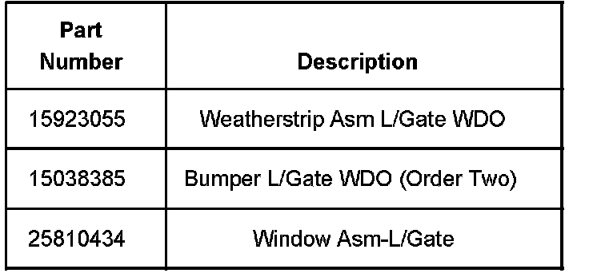
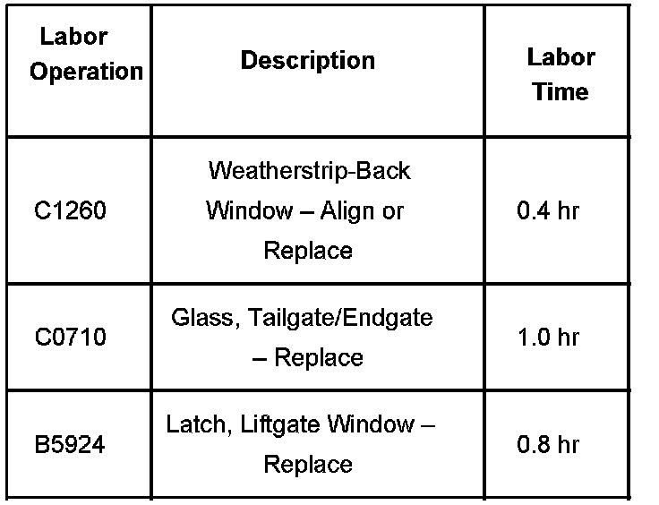

Body - Windnoise From Rear of Vehicle/Liftgate Glass
Bulletin No.: 06-08-66-012CDate: July 31, 2007
TECHNICAL
Subject:
Windnoise From Rear of Vehicle/Liftgate Glass (Replace Seal, Stop Bumpers and Rear Glass)
Models:
2007 Cadillac Escalade, Escalade ESV
2007 Chevrolet Suburban, Tahoe
2007 GMC Yukon, Yukon XL
Supercede:
This bulletin is being revised to change the correction procedure. Please discard Corporate Bulletin Number 06-08-66-012B (Section 08 - Body and Accessories).
Condition
Some customers may comment on excessive windnoise coming from the rear of the vehicle, especially when trailering.
Cause
The rear glass may not have enough compression to the seal.
Correction
Replace the liftgate glass seal, the two liftgate glass rubber stop bumpers and the rear liftgate glass, which has more "tuck" or curvature that allows for better seal contact and resolves the windnoise issue.
A liftgate latch adjustment may also be necessary. The following describes the steps in the adjustment:
Remove the upper and lower interior trim panels.
Loosen the set screws on the latch housing.
Slide the latch forward by approximately 2.0 mm (0.08 in) and retighten the screws.
Evaluate the glass closing efforts to ensure proper position of the latch w/adjustment by opening and closing the glass at least three times.
The latch may need to be readjusted if the closing efforts are too high.
Reinstall the interior trim panels.
Dealer Action
Please contact all customers that were told they would be called when a repair became available.
Any replacement glass that is not from the production supplier will not guarantee the corner tuck on the glass profile, therefore not ensuring the corrective action is in place.

Parts Information
Warranty Information

For vehicles repaired under warranty, use the table.

Disclaimer